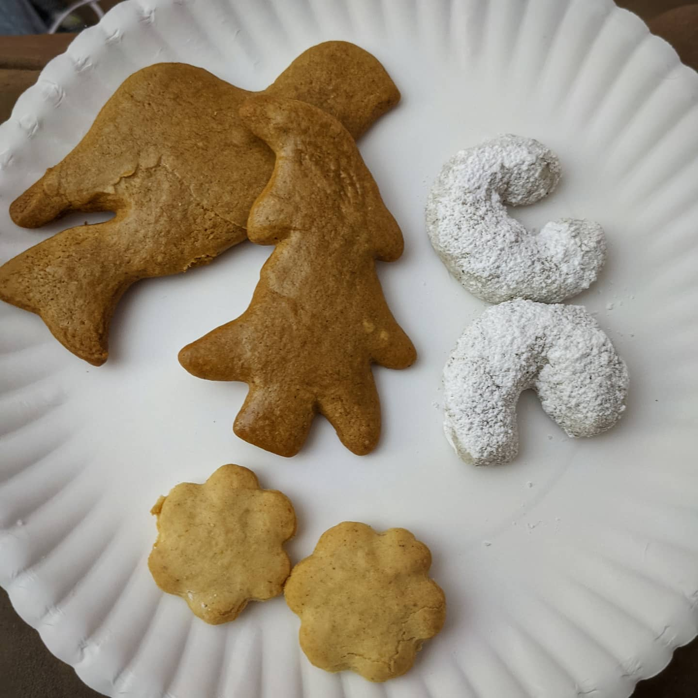

Zázvorníky podľa @bohemiagirlnextdoor — Normy Jedál
Sometimes you get a wild hair.
On a Friday night.
And end up making nearly 200 cookies over the weekend.
I've wanted to make Slovak cookies since I discovered that's part of my heritage. Thanks to google translate, Amazon, and a hefty dose of baking knowledge, I was able to travel internationally via my taste buds.
#cookies #christmascookies #christmas #medovniky #vanilkoverozky #zazvorniky